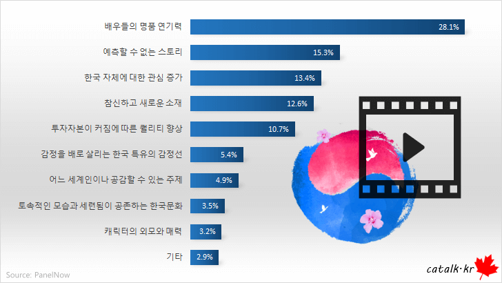

한국의 드라마, 영화 / K-Movie
한국의 드라마, 영화 / K-Movie
2022년 9월 8일에 한국국제문화교류진흥원(KOFICE)가 발표한 ‘2022 글로벌 한류 트렌드’
보고서를 보면 해외 소비자들이 코로나19 이후 다른 어떤 장르보다 한국 드라마(53.8%)에 대한 소비를 가장 많이 한 것으로 나타났다.
그 다음은 영화(51.8%)가 차지했다.
드라마(81.6%)는 다른 장르들을 제치고 한국 문화콘텐츠 ‘호감도’ 1위를 차지했다.
뒤이어 영화(80.6%)가 호감도 2위이다.
위의 통계를 보듯이 한국의 드라마와 영화는 코로나 이후에 가장 큰 비중을 가지고 있는 대중문화이다.
지금부터 한국드라마, 영화에 대해서 소개하고자 한다.
왼쪽 사진은 온라인 패널 서비스 패널나우가 2021년 11월 8일부터 12일까지 5일 동안 전국 40,028명을 대상으로 실시한 설문조사결과이다.

한국의 드라마
한국의 드라마에서는 ‘오징어 게임’(21.2%)에 이어 사랑의 불시착(2.2%)의 선호도를 보였다.
오징어 게임은 황동혁 감독이 제작한 넷플릭스 오리지널 한국 드라마이다. 2021년 9월 17일에 공개되었다.
456명의 사람들이 456억의 상금이 걸린 미스터리한 데스 게임에 초대되면서 벌어지는 이야기를 그린 서바이벌,
데스 게임 장르의 드라마이며 제목은 골목 놀이인 오징어에서 따 왔다.
세계에서 엄청난 수익을 올리며 유명해진 한국 드라마다.
오징어 게임은 상대적으로 가난한
사람들이 돈과 출세를 위해 물불을 안 가리고 서로 경쟁하는 적자생존의 현장을 적나라하게 표현한 드라마다.
사랑의 불시착은 2019년 12월 14일부터 2020년 2월 16일까지 방영한 tvN 토일 드라마이다.
어느 날 돌풍과 함께 패러글라이딩 사고로 북한에 불시착한 재벌 2세 패션업계 사장 윤세리와 그녀를 숨기고 지키다 사랑하게 되는 특급 장교 리정혁의 절대 극비 로맨스를 그린다.
한국의 영화
최선호 한국 영화는 기생충(10.3%)이었고, 뒤이어 부산행(6.8%)이었다.
봉준호감독의 영화 기생충은 2019년에 개봉한 블랙 코미디 영화이다.
한국에서는
천만명 이상의 관객을 동원하며 흥행했고 제 72회 칸 영화제 공식경쟁부분에 초청되어
뤼미에르 극장에서 공식 스크리닝이 진행되었다.
전세계에서 약 2억 5천만 달러를 벌어들였다.
상류층과 하류층의 두 가족의 만남을 다룬 영화이다.
부산행은 2016년에 개봉한 한국의 좀비 영화이다.
미확인 바이러스 감염자들이 발생한
아비규환 속의 부산행 KTX에서 벌어지는 이야기이다.
국내에서 천만관객을 넘었다.
해외에서도 호평을 받으며
세계적인 수작 좀비물의 반열에 올랐다.